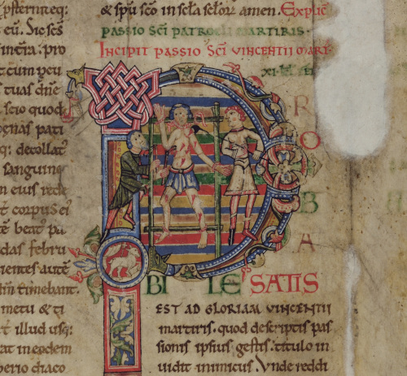
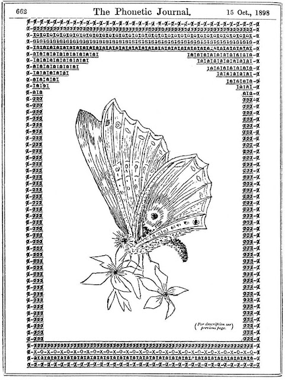
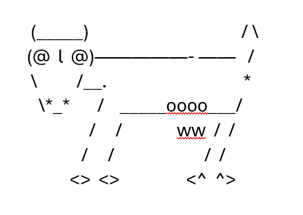

‘Make A Silly Cow!’
Wie de oorsprong van de algoritmische taal wil begrijpen, moet niet beginnen bij de computer of de microchip, maar bij de vroegste beschavingen van de mensheid. Zowel Chris Bleakley van het boek ‘Als dit dan dat; De algoritmen waar de digitale wereld op draait,’( februari 2023, Hstk 1: Algoritmes uit de oudheid, p.19-29) als de mediaflosoof Matteo Pasquinelli in het artikel ‘ Three Thousand Years of Algorithmic Rituals: The Emergence of AI from the Computation of Space’ (E-flux Journal, Matteo Pasquinelli, juni 2019) betogen beiden dat algoritmen geen uitvinding zijn van het moderne, westerse technologische tijdperk. Ze behoren tot de oudste en meest materiële praktijken van de mens, aanwezig al lang vóór elke machine, en zelfs vóór de opkomst van complexe culturele systemen als religie en taal. Samen bieden hun perspectieven een krachtig argument voor een fundamentele heroriëntatie van hoe wij de digitale wereld begrijpen.
Pasquinelli opent zijn betoog met een opvallend oud voorbeeld: de Agnicayana, een Vedisch ritueel dat in India al rond 800 v.Chr. op schrift werd gesteld, maar een veel oudere mondelinge traditie vertegenwoordigt. In dit ritueel herlegt een gemeenschap van gelovigen letterlijk het lichaam van de god Prajapati, door duizenden precies gevormde bakstenen in een specifieke geometrische configuratie te plaatsen, in de vorm van een valk. Elke steen is genummerd, elke stap wordt vergezeld van een mantra, elke laag moet dezelfde oppervlakte behouden als de vorige, maar met een andere rangschikking van stenen. Wat Pasquinelli hiermee aantoont, is dat een algoritme niet van bovenaf wordt bedacht als een abstracte wiskundige formule, maar van onderaf ontstaat uit herhaalde, materiële handelingen. Hij formuleert vier kenmerken die elk algoritme definiëren: 1. het is een abstract diagram dat oprijst uit de herhaling van een proces; 2. het verdeelt dat proces in stappen voor efficiënte uitvoering en controle; 3. het is een oplossing voor een probleem, een soort truc; 4. en bovenal is het een proces, dat de minst mogelijke middelen aan tijd, ruimte en energie verbruikt.
Dit theoretische kader sluit naadloos aan bij wat Bleakley historisch documenteert aan de hand van de kleitabletten van Mesopotamië. Bleakley voert de lezer terug naar Uruk, een van de oudste steden van Soemer, gelegen in het zuidelijke deel van Mesopotamië, het land tussen de rivieren Eufraat en Tigris. Uruk was, zo stelt Bleakley, zevenduizend jaar geleden de allerbelangrijkste plek op aarde. Het was hier dat de beschaving werd geboren. Circa vijfduizend jaar geleden begonnen de Soemeriërs met het indrukken van rietstengels in natte klei, waarmee zij wigvormige symbolen (het latere spijkerschrift) vastlegden. De kleitabletten die zo ontstonden, waren niet louter administratieve hulpmiddelen; zij vertegenwoordigden een cognitieve revolutie. Afspraken, wetten, handelstransacties en wiskundige procedures konden voor het eerst worden bewaard en over afstand gecommuniceerd. Dit is niet toevallig ook het moment dat Pasquinelli situeert als een cruciale overgang in de geschiedenis van abstractie. Hij wijst erop dat de allereerste gedocumenteerde volkstelling plaatsvond rond 3800 v.Chr. in Mesopotamië op de kleitabletten. Het is een bewijs dat getallen en logische vormen niet voortspruiten uit wiskundige abstractie, maar eerder uit de sociale praktijk: arbeid, markering en herhaling van handelingen. Algoritmen, zo betoogt hij, zijn in wezen sociale constructen voor de indeling van ruimte, tijd ter communicatiemiddel van de vroege mens. Twee millennia lang lagen de tabletten daarna begraven onder zandophopingen in die gebieden. Pas in de negentiende eeuw begonnen Europese archeologen opgravingen in de ruïnes van Mesopotamië. De sleutel tot ontcijfering was de Behistun-inscriptie in West-Iran: een monumentale rotsinschrijving die dezelfde tekst in drie talen bevatte. De Britse officier Henry Rawlinson publiceerde in 1846 een volledige vertaling van de Oudperzische tekst, die assyriologen vervolgens in staat stelde ook de Babylonische en Soemerische tabletten te lezen. Wat zij aantroffen, beschrijft Bleakley als een verbijsterend rijke wereld: legendes, wetten, diplomatieke correspondentie, liefdesgedichten, en, opmerkelijk genoeg, wiskundige procedures die wij nu herkennen als algoritmen.
De mathematische tabletten uit het Oud-Babylonische tijdperk (ca. 1800–1600 v.Chr.) tonen dat de Mesopotamische wiskundigen beschikten over een verfijnde, stapsgewijze aanpak voor het oplossen van wiskundige vraagstukken. Bleakley illustreert dit aan de hand van een voorbeeld waarbij de lengte en breedte van een waterreservoir berekend moeten worden, gegeven het volume, de hoogte en het gewenste verschil tussen lengte en breedte. De weg naar de oplossing stond er centraal, niet de oplossing zelf. Het was een peer-to-peer gegeven dat gedeeld kon worden met iedereen en daarom werd opgeslagen, gegraveerd, in de kleitabletten. Een openbare truc. Dit sluit aan bij wat Pasquinelli omschrijft als de vroegste fase in de driedelige geschiedenis van het algoritme: in de oudheid verschijnt het algoritme als een gecodificeerde procedure of ritueel om een specifiek doel te bereiken en regels over te dragen. Precies dit is wat wij een algoritme noemen.
Naast wiskundige algoritmen beschrijft Bleakley ook een ander fundament van het algoritmisch denken: de conditionele regel. In de Codex Hammoerabi (ca. 1754 v.Chr.) zijn 282 wetten opgetekend in de als-dan-structuur: "Als een man het oog van een andere man verwoest, dan moet men zijn oog verwoesten." Ook in medische en astrologische teksten uit de bibliotheek van koning Assoerbanipal in Ninive (ca. 650 v.Chr.) vinden we dezelfde logische opbouw. Pasquinelli benoemt deze zijde van de Babylonische traditie eveneens, en wijst erop dat de Babyloniërs algoritmen gebruikten voor het beslissen van rechtszaken, het doen van astronomische voorspellingen en het voorschrijven van medische behandelingen. De als-dan-constructie is de fundamentele bouwsteen van elke moderne programmeertaal.
“Algorithms are not confined to mathematics … The Babylonians used them for deciding points of law, Latin teachers used them to get the grammar right, and they have been used in all cultures for predicting the future, for deciding medical treatment, or for preparing food … We therefore speak of recipes, rules, techniques, processes, procedures, methods, etc., using the same word to apply to different situations. The Chinese, for example, use the word shu (meaning rule, process or stratagem) both for mathematics and in martial arts … In the end, the term algorithm has come to mean any process of systematic calculation, that is a process that could be carried out automatically. Today, principally because of the influence of computing, the idea of finiteness has entered into the meaning of algorithm as an essential element, distinguishing it from vaguer notions such as process, method or technique.” (Uit artikel: E-flux Journal, Matteo Pasquinelli, ‘ Three Thousand Years of Algorithmic Rituals: The Emergence of AI from the Computation of Space’, juni 2019, Quote van Jean-Luc Chabert, “Introduction,” 1–2.)
Naast het ontstaan van het algoritme op de kleitabletten spreken de vormen, pictogrammen, tekens als invulling van de taal of communicatie mij aan. We zien in de geschiedenis door deze opgravingen dat beelden een taal spreken en in sommige situatie een universelere waarheid kunnen belichamen. Dat een geometrische tekening op een tablet duizenden jaren na oorsprong nog hetzelfde kan zeggen, spreekt tot mijn verbeelding. Ironisch genoeg is de eerst geschreven taal geen taal met letters en cijfers, maar een opeenvolging van uitgebeelde iconen, die ideeën of objecten belichamen.
Joan G. Stark, schreef aan het einde van de jaren negentig een van de meest uitgebreide historische overzichten over tekst gebaseerde kunst. Haar tekst is zelf een interessant artefact: een digitaal document dat het verhaal vertelt van hoe beelden altijd al uit tekens zijn opgebouwd, lang vóór de computer.
Met de tijd ontwikkelde het uitgebeelde woord zich tot symbolen die meer leken op de huidige tekens van ons alfabet. Maar toch probeerde de mens bij de geschreven taal altijd het iconografische of beeldende terug te betrekken bij het schrift. Zo werden de allereerste tekstkunstwerken werden uiteraard met de hand getekend en ontstond het sierschrift. De klooster monikken creëerden adembenemende manuscripten waarin letters en tekst werden verweven met hun kunst. Zo versierden ze de eerste letter van een manuscript of een boek meetstal op een creatieve wijze die uitblonk boven de rest van de tekst. Joan G. Stark, 2001, The History of ASCII (Text) Art, Geraadpleegd op 08/05/2026,via https://web.archive.org/web/20091026141759/http:/geocities.com/SoHo/7373/history.htm).

(Afbeelding:Een geïllustreerde letter P uit de Passionale (Leven van de heilige). Origineel zeven volumes, uit 1570-1580, afkomstig uit een manuscript in de Canterbury Kathedraal. Archives Hub (Jisc). (2019, 1 juli). Pilgrimage and Patronage: The Medieval Collections of Canterbury Cathedral Archives and Library [Blogbericht]. Canterbury Cathedral Archives & Library. https://blog.archiveshub.jisc.ac.uk/2019/07/01/pilgrimage-and-patronage-the-medieval-collections-of-canterbury-cathedral-archives-and-library/)
Dan is het ook niet on-denkelijk dat wanneer door de uitvinding van Christopher Latham Sholes in 1867 de typemachine ter wereld kwam, er ook voor creatieve manieren werd gezocht om aan tekstverwerking te doen. Zo vond Stark het vroegst bewaarde voorbeeld van typemachinekunst dat dateert uit 1898 en dit werd gemaakt door een vrouw genaamd Flora Stacey, (Joan G. Stark, 2001, The History of ASCII (Text) Art) Haar afbeelding van een vlinder, opgebouwd uit haken, koppeltekens, punten en andere tekens, verscheen in de Pitman's Phonetic Journal. De typemachine bood kunstenaars unieke mogelijkheden: papier draaien, tekens over elkaar drukken, halve spatiëring.

(Afbeelding. Vlinder tekenening Flora Fanny Stacey. Overgenomen van oz.Typewriter, door R. Messenger, 2020 (https://oztypewriter.blogspot.com/...).)
Met het ontstaan van de computer kwam het toetsenbord ter wereld. De binaire 0-1 algoritmen waren zodanig uitgebreid dat ze konden gebruikt worden om bepaalde tekens op een knop te doen verschijnen op een digitaal blad, een beeldscherm. De ASCII-code werd gecreëerd in de vroege jaren zestig en pas gestandaardiseerd in 1968. In het vroege internet, dat aanvankelijk puur tekstueel was, gebruikten mensen ASCII-kunst voor diagrammen, handtekeningen en emoticons. In de late jaren zeventig en vroege jaren tachtig maakten gebruikers van bulletin board systems (BBS), e-mail en Usenet-nieuwsgroepen intensief gebruik van ASCII-beelden.
In de wereld van typ-kunst ASCII-kunst (kunst die je maakt met alleen je toetsenbord) bestaat er een grappige traditie: de ‘Silly Cow’. In de beginperiode van het internet konden mensen nog geen foto’s of echte afbeeldingen delen, dus maakten ze tekeningen met letters en tekens. Eén van de eerste en bekendste voorbeelden was een simpel, gek koetje. Het werd zo populair dat het een soort mascotte werd binnen de ASCII-kunst. Programmeurs, kunstenaars en early-internetgebruikers maakten steeds nieuwe varianten van dat koetje, als grap, als oefening en soms gewoon als herkenbaar symbool. Daardoor is de getypte-koe uitgegroeid tot een klassieker. De typ-kunstenaar gebruikt de koe als vertrekpunt om andere vormen te leren uitbeelden.
Ik maakte eens een koe. Misschien doe ik het nog wel eens? Misschien laat ik de leerling dit eens proberen?
